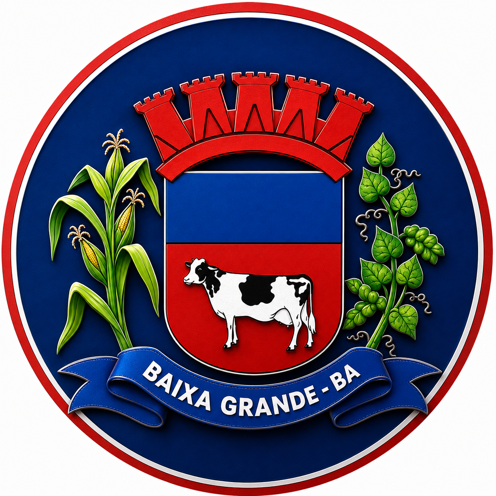

11 DE AGOSTO DE 2026
🚀 Sub-20 é lançado
A Seleção de Baixa Grande anuncia oficialmente a chegada da categoria Sub-20 ao projeto.

Representando Baixa Grande dentro e fora de campo.
Formação de jovens atletas
Formação de jovens atletas
Formação e desenvolvimento
Nova categoria da Seleção
A Seleção de Baixa Grande amplia seu projeto de futebol de base com o lançamento da categoria Sub-20.
A nova categoria se junta ao Sub-13, Sub-15 e Sub-17, fortalecendo o trabalho de formação e desenvolvimento do futebol de Baixa Grande.
Resultado em breve
Resultado em breve
Resultado em breve
Desenvolvimento e formação de jovens atletas.
Participação em competições e eventos esportivos.
Representando nossa cidade dentro e fora de campo.
A Seleção de Baixa Grande anuncia oficialmente a chegada da categoria Sub-20 ao projeto.
O projeto conta agora com Sub-13, Sub-15, Sub-17 e Sub-20.
O trabalho de base busca fortalecer o futebol e desenvolver jovens atletas.
A Seleção de Baixa Grande representa a força, a paixão e o orgulho do futebol da nossa cidade.
Com categorias de base do Sub-13 ao Sub-20, o projeto busca criar oportunidades e fortalecer o esporte local.